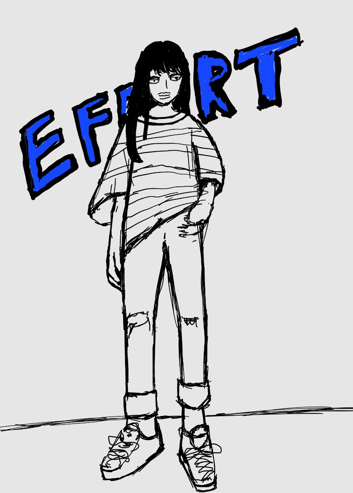

안녕하세요 정현우가 만든 Web 페이지입니다. 저는 숭실대 AI융합학부에 재학 중입니다.
저는 머신러닝과 데이터 분석에 관해 흥미를 가지고 있습니다. 이를 위해 지금 GDSC에서 활동하고 있습니다. 이 사이트는 제가 취미로써 만드는 것입니다. 때문에 그렇게까지 퀄리티가 높을 것이라고 생각하지 않습니다.
또 저는 취미로 그림을 그리고 있습니다. 그림도 그다지 잘 그리지는 않습니다만 열심히 그리는 타입입니다. 중학생 시절에 만화를 너무 좋아해서 그 만화에 나오는 캐릭터들을 그리고 싶어서 그림을 그리기 시작했습니다. 중학교 3학년에는 하루종일 그림을 그려서 졸라맨만 그리던 제가 사람을 그리게 되었습니다. 고등학생 때는 잠깐 그림을 멈추고 올해 들어서 그림을 다시 그리고 있습니다.
프로그래머들은 방학에 놀면 안 됩니다. 꾸준히 공부해야 하고 새로운 것을 계속해서 알아가야 합니다. 때문에 프로그래머들에게 있어서 계획이라고 하는 것은 중요하다고 생각합니다. 따라서 저는 아래에 제가 방학 중에 해야 할 것들의 목록을 써 보겠습니다.
또 저는 블로그를 운영하고 있습니다. 블로그에는 주로 알로리즘을 어떻게 푸는지에 관한 내용을 올리고 있습니다. 학교를 다니게 되면서 블로그를 쉬었고 보는 사람도 없어서 의욕도 떨어졌지만 많은 사람이 보고 공부할 수 있는 블로그를 만드는 것도 저의 목표 중 하나입니다. 다음은 제 블로그의 링크 입니다. 정현우의 코딩블로그